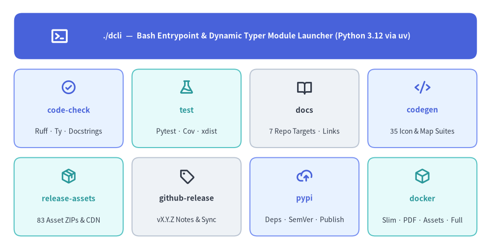
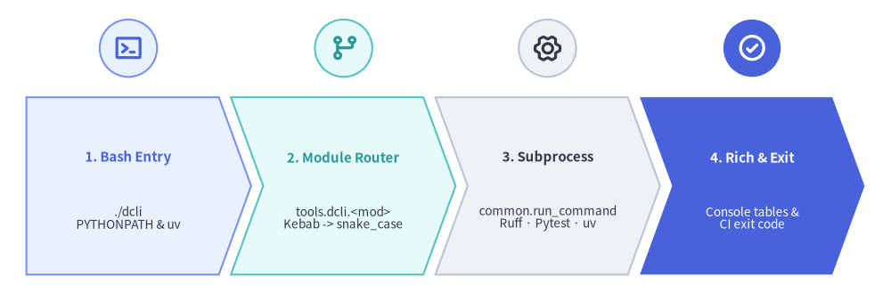

Developer Tooling: The ./dcli Unified Orchestrator
The Drawlib repository eliminates ad-hoc shell scripts, undocumented CLI flags, and brittle multi-tool handoffs by consolidating every development workflow behind a single entrypoint: ./dcli.

Source Code
from drawlib.canvas import save, setup
from drawlib.icons import phosphor
from drawlib.smartarts import GridLayout
from drawlib.styles import Styles
from drawlib.text import text
setup(width=122, height=62)
grid = GridLayout(
num_column=4,
num_row=3,
style=Styles.Neutral.patch(shape_r=1.8),
text_style=Styles.DarkBold.patch(text_size=11.0),
)
# Row 2 (Top): Root Bash & Typer Master Launcher
grid.add(
position=(0, 2),
width=4,
height=1,
style=Styles.PrimaryFlat.patch(shape_r=2.0),
text="./dcli — Bash Entrypoint & Dynamic Typer Module Launcher (Python 3.12 via uv)",
text_style=Styles.WhiteBold.patch(text_size=11.2, xy_shift=(2.8, 0.0)),
)
# Row 1 (Middle): 4 Core Code, Test, Docs & Codegen Toolsets
row1_specs = [
(0, "code-check", "Ruff · Ty · Docstrings", phosphor.check_circle, Styles.PrimaryNeutral, Styles.PrimaryBold),
(1, "test", "Pytest · Cov · xdist", phosphor.flask, Styles.SecondaryNeutral, Styles.SecondaryBold),
(2, "docs", "7 Repo Targets · Links", phosphor.book_open, Styles.Neutral, Styles.DarkBold),
(3, "codegen", "35 Icon & Map Suites", phosphor.code, Styles.PrimaryNeutral, Styles.PrimaryBold),
]
for col, title, _, _, card_style, icon_style in row1_specs:
grid.add(
position=(col, 1),
width=1,
height=1,
style=card_style.patch(shape_r=1.8),
text=title,
text_style=icon_style.patch(text_size=11.0, xy_shift=(0.0, -0.4)),
)
# Row 0 (Bottom): 4 Asset, Release, PyPI & Container Toolsets
row0_specs = [
(0, "release-assets", "83 Asset ZIPs & CDN", phosphor.package, Styles.SecondaryNeutral, Styles.SecondaryBold),
(1, "github-release", "vX.Y.Z Notes & Sync", phosphor.tag, Styles.Neutral, Styles.DarkBold),
(2, "pypi", "Deps · SemVer · Publish", phosphor.cloud_arrow_up, Styles.PrimaryNeutral, Styles.PrimaryBold),
(3, "docker", "Slim · PDF · Assets · Full", phosphor.cube, Styles.SecondaryNeutral, Styles.SecondaryBold),
]
for col, title, _, _, card_style, icon_style in row0_specs:
grid.add(
position=(col, 0),
width=1,
height=1,
style=card_style.patch(shape_r=1.8),
text=title,
text_style=icon_style.patch(text_size=11.0, xy_shift=(0.0, -0.4)),
)
grid.draw_flexible(
xy=(3.5, 3.25),
column_widths=[27.1] * 4,
column_margins=[0.0, 2.2, 2.2, 2.2, 0.0],
row_heights=[19.5, 19.5, 11.5],
row_margins=[0.0, 2.5, 2.5, 0.0],
)
# Overlay crisp Phosphor icons and concise subtitles inside each cell
phosphor.terminal_window((14.8, 53.0), width=4.6, style=Styles.WhiteBold)
for idx, (_, _, subtitle, icon_fn, _, icon_style) in enumerate(row1_specs):
cx = 17.05 + idx * 29.3
icon_fn((cx, 40.2), width=4.0, style=icon_style)
text((cx, 29.2), subtitle, style=Styles.Dark.patch(text_size=10.0))
for idx, (_, _, subtitle, icon_fn, _, icon_style) in enumerate(row0_specs):
cx = 17.05 + idx * 29.3
icon_fn((cx, 18.2), width=4.0, style=icon_style)
text((cx, 7.2), subtitle, style=Styles.Dark.patch(text_size=10.0))
save()
1. Concept: The Unified Developer CLI Pattern
In a graphics, documentation compiler, and packaging repository, contributors and AI coding agents routinely invoke dozens of distinct subsystem tools:
- Static Quality:
ruff check [--fix],ty check,@validate_calldocstring AST audits, and line counters. - Test Execution:
pytest,pytest-cov, and parallelpytest-xdistworkers (-n auto --dist loadfile). - Documentation Compilation: Building and validating 7 repository documentation targets (
site,api,architecture,reports,readme,logo,ogp) intodocs/. - Asset & Binding Generation: Compiling 34 vector/PNG icon suites, normalizing 23 upstream GeoJSON datasets, and synchronizing 83 deterministic
.zipasset manifests. - Release & Clean-Room Verification: Querying PyPI versions, publishing slim wheels, syncing versioned GitHub Releases (
vX.Y.Z) fromrelease_notes.md, and running isolated Linux container test suites.
Leaving these workflows scattered across raw terminal commands creates three recurring failure modes:
- Flag Drift: Contributors run inconsistent linter or test flags locally versus CI.
- AI Agent Invocation Errors: Coding agents waste turns guessing nested module paths or environment variables instead of calling deterministic verbs.
- Inconsistent Diagnostics: Ad-hoc scripts lack uniform command echoing, Rich status summaries, and strict exit-code propagation.
./dcli resolves all three by pairing a lightweight root Bash launcher (./dcli) with modular Python 3.12 + Typer + Rich toolset packages under tools/dcli/.
2. Positioning: Direct Module Routing Without a Monolithic Entrypoint
Rather than importing every toolset eagerly through a monolithic main.py, ./dcli uses a fast two-stage dispatch pipeline that imports only the requested tools.dcli.<module> package at runtime:

Source Code
from drawlib.canvas import save, setup
from drawlib.icons import phosphor
from drawlib.shapes import circle
from drawlib.smartarts import ChevronProcess
from drawlib.styles import Styles
setup(width=118, height=40)
pipeline = ChevronProcess(
style=Styles.Neutral,
text_style=Styles.DarkBold.patch(text_size=10.8),
description_style=Styles.Dark.patch(text_size=9.8),
corner_angle=70.0,
spacing=1.6,
flat_left_end=True,
)
pipeline.add(
"1. Bash Entry",
description="./dcli\nPYTHONPATH & uv",
style=Styles.PrimaryNeutral,
text_style=Styles.PrimaryBold.patch(text_size=10.8),
)
pipeline.add(
"2. Module Router",
description="tools.dcli.<mod>\nKebab -> snake_case",
style=Styles.SecondaryNeutral,
text_style=Styles.SecondaryBold.patch(text_size=10.8),
)
pipeline.add(
"3. Subprocess",
description="common.run_command\nRuff · Pytest · uv",
style=Styles.Neutral,
text_style=Styles.DarkBold.patch(text_size=10.8),
)
pipeline.add(
"4. Rich & Exit",
description="Console tables &\nCI exit code",
style=Styles.PrimaryFlat,
text_style=Styles.WhiteBold.patch(text_size=10.8),
description_style=Styles.White.patch(text_size=9.8),
)
pipeline.draw(xy=(3.5, 3.5), width=111.0, height=23.5)
badges = [
(17.0, phosphor.terminal_window, Styles.PrimaryNeutral, Styles.PrimaryBold),
(45.5, phosphor.git_branch, Styles.SecondaryNeutral, Styles.SecondaryBold),
(72.5, phosphor.gear_six, Styles.Neutral, Styles.DarkBold),
(99.6, phosphor.check_circle, Styles.PrimaryFlat, Styles.WhiteBold),
]
for cx, icon_fn, bg_style, fg_style in badges:
circle((cx, 33.5), radius=3.8, style=bg_style)
icon_fn((cx, 33.5), width=4.0, style=fg_style)
save()
Every engineering operation maps cleanly to one of the eight discovered toolsets under tools/dcli/:
| Toolset | Module (tools/dcli/) |
Subcommands & Operational Scope |
|---|---|---|
code-check |
code_check/ |
lint (uv run ruff check [--fix] across src, tests, tools), type (ty check across src/drawlib, tests, tools), docstring (@validate_call internal alias check), lines, and all (lint + type + docstring). |
test |
test.py |
all, drawlib, dcli, and target <shortcut_or_path> (18 module shortcuts, pytest-xdist parallelization, and pytest-cov reporting). |
docs |
docs/ |
build and serve across 7 repository targets (site, api, architecture, reports, readme, logo, ogp -> docs/) with preflight link validation (--check / --skip-check; static HTTP server without a file watcher). |
codegen |
codegen/ |
35 subcommands: icon-phosphor, icon-gcp, icon-aws, icon-azure, 15 icon-<domain> suites (ai..workspace), 15 icon-original-<domain> pastel suites, and map. |
release-assets |
release_assets/ |
Deterministic .zip archive building (build), offline SoT manifest synchronization (sync / sync --check), remote GitHub Release SHA-256 audits (remote), upload, and remove. |
github-release |
github_release/ |
Versioned GitHub Releases (vX.Y.Z) extracted from docs_src/site/en/01_getting_started/release_notes.md: list (sync status vs. GitHub), notes (preview formatted Markdown), create (idempotent publish/update), and sync (chronological backfill across --from/--to). |
pypi |
pypi/ |
Read-only pyproject.toml dependency listing (deps), PyPI release history lookup (dep-releases), SemVer progression checks (list-versions, latest, check-version), and publish (--test-pypi or production PyPI; never mutates pyproject.toml). |
docker |
docker.py |
status, build (slim, --pdf, --assets, --full), clean-room test (local source, --test-pypi <VER>, --pypi <VER>), list, and prune. |
3. Details: Entrypoint Routing, Autocompletion, and Process Runner
3.1. Bash Launcher & Master Summary (./dcli & tools/dcli/__main__.py)
The root ./dcli script configures PYTHONPATH="${SCRIPT_DIR}:${SCRIPT_DIR}/src" so both tools.dcli.* and drawlib.* are immediately importable inside the uv virtual environment:
- Zero-Argument Summary (
tools/dcli/__main__.py): Running./dcliwith no arguments (or--help/-h) invokesexec uv run python -m "tools.dcli" "$@".tools/dcli/__main__.pycallsdiscover_toolsets()(tools/dcli/common.py) and renders a 2-column Rich summary table (ToolsetandDescription, extracted dynamically from the first line of each module's docstring). - Direct Toolset Execution: When passed
<toolset> [args...],./dcliconverts kebab-case to snake_case (CLI_MOD="${CLI_NAME//-/_}"), verifies thattools/dcli/${CLI_MOD}.pyortools/dcli/${CLI_MOD}/exists (excluding internal modules__init__,__main__,common,completion, and_*), and executesexec uv run python -m "tools.dcli.${CLI_MOD}" "$@"directly. Unknown toolset names delegate topython -m tools.dcli --invalid-toolset <name>for a formatted Rich error panel and exit code1.
3.2. Shell Integration & Dynamic Tab Completion (tools/dcli/completion.py)
Sourcing ./dcli in Bash or Zsh (ZSH_EVAL_CONTEXT / BASH_SOURCE detection) registers a shell alias and dynamic completion hook without executing any CLI command:
# Register 'dcli' alias and _dcli_completions in the current Bash/Zsh session
source ./dcli
When [Tab] is pressed, _dcli_completions invokes ${SCRIPT_DIR}/dcli with _DCLI_COMPLETE=complete, COMP_WORDS, and COMP_CWORD, which routes directly to uv run python -m "tools.dcli.completion":
- At
cword == 1,completion.pycompletes discovered kebab-case toolset names (code-check,codegen,docker,docs,github-release,pypi,release-assets,test). - At
cword > 1,completion.pyimportstools.dcli.<mod>and inspectsapp.registered_commandsandapp.registered_groupson itstyper.Typerinstance to complete top-level subcommands and command groups dynamically.
3.3. Shared Process Runner & Exit Code Contract (tools/dcli/common.py)
All external subprocess invocations flow through tools.dcli.common.run_command(args, cwd, env, desc):
- Prints optional task headers (
[bold cyan]) and exact command lines (Running: ...) to stdout via RichConsole. - Merges custom environment variables (such as
UV_PUBLISH_TOKEN) atopos.environ. - Catches
FileNotFoundErrorandsubprocess.CalledProcessError, formats diagnostics tostderrviaerr_console, and raisestyper.Exit(code=e.returncode)so GitHub Actions workflows and AI coding agents receive exact non-zero failure codes.
Next, explore how external binary packages and typed icon/map bindings are generated in Code Generation & Assets.